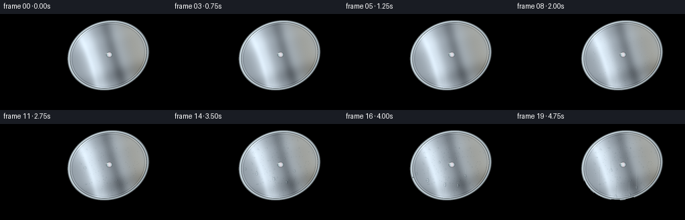
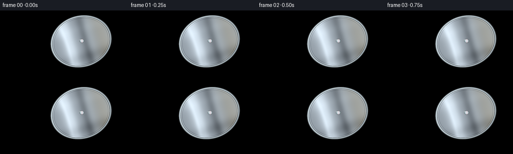

CODING AGENTS AS PIXEL WORLD MODELS
traex/GPT-6.1-Sol · phygen_103
点击播放 · 原生 RGB 像素
逐轮保存的候选
回放视频、检查图与代码变化。
每份候选均可单独播放。实际图片检查记录在下方工具轨迹中。
候选 01播放与检查图
点击播放 · 原生 RGB 像素

展开代码变化
--- 上一保存版本
+++ 本次保存版本
@@ -0,0 +1,340 @@
+"""Procedural RGB timelapse: warm kitchen vapour condenses on a cold steel lid.
+Only NumPy/Pillow, analytic geometry and deterministic textures are used.
+"""
+from pathlib import Path
+import json
+import math
+import numpy as np
+from PIL import Image, ImageDraw, ImageFilter
+import artifact_io
+
+ROOT = Path(__file__).resolve().parent
+SPEC = json.loads((ROOT / 'task_spec.json').read_text())
+S = 3
+W, H = SPEC['width']*S, SPEC['height']*S
+Y, X = np.mgrid[0:H, 0:W].astype(np.float32)
+x, y = (X+.5)/S, (Y+.5)/S
+rng = np.random.default_rng(7312)
+noise = rng.normal(0, 1, (H, W)).astype(np.float32)
+
+
+def layer(base, rgb, alpha):
+ a = np.clip(alpha, 0, 1)[..., None]
+ return base*(1-a) + np.asarray(rgb)*a
+
+
+def ellipse(cx,cy,rx,ry):
+ return ((x-cx)/rx)**2 + ((y-cy)/ry)**2
+
+
+def draw_scaled(im, callback):
+ d = ImageDraw.Draw(im)
+ class D:
+ def rectangle(self, box, **kw): d.rectangle(tuple(int(v*S) for v in box), **kw)
+ def ellipse(self, box, **kw): d.ellipse(tuple(int(v*S) for v in box), **kw)
+ def polygon(self, pts, **kw): d.polygon([(int(a*S),int(b*S)) for a,b in pts], **kw)
+ def line(self, pts, fill, width=1): d.line([(int(a*S),int(b*S)) for a,b in pts], fill=fill, width=max(1,int(width*S)))
+ def rounded_rectangle(self, box, radius, **kw): d.rounded_rectangle(tuple(int(v*S) for v in box), radius=int(radius*S), **kw)
+ callback(D())
+
+
+def kitchen():
+ # Deliberately defocused domestic background, with daylight from the left.
+ a = np.zeros((H,W,3),np.float32)
+ lit = 11*np.exp(-((x-28)/90)**2) - y*.10
+ a[:] = np.array([164,151,132]) + lit[...,None]
+ im = Image.fromarray(np.uint8(np.clip(a,0,255)))
+ def fixtures(d):
+ d.rectangle((0,0,41,99),fill=(204,216,217))
+ d.rectangle((3,0,32,83),fill=(220,229,224))
+ d.line([(34,0),(34,94)],fill=(119,132,128),width=3)
+ d.line([(0,42),(33,42)],fill=(181,190,180),width=3)
+ d.rectangle((43,0,256,94),fill=(169,156,138))
+ for yy in (25,52,79):
+ d.line([(44,yy),(256,yy)],fill=(137,127,113),width=1)
+ d.line([(44,yy+1),(256,yy+1)],fill=(187,174,154),width=.5)
+ for xx,ya,yb in [(77,0,25),(146,0,25),(215,0,25),(111,25,52),(181,25,52),(77,52,79),(146,52,79),(215,52,79),(111,79,94),(181,79,94)]:
+ d.line([(xx,ya),(xx,yb)],fill=(144,133,118),width=1)
+ d.rectangle((0,93,256,144),fill=(117,86,60))
+ d.line([(0,94),(256,94)],fill=(176,143,107),width=2)
+ # Blurred chopping board and small bottle add kitchen context.
+ d.rounded_rectangle((224,32,253,94),radius=5,fill=(136,91,51))
+ d.rounded_rectangle((233,36,245,41),radius=2,fill=(105,69,40))
+ d.line([(229,48),(229,89)],fill=(159,114,72),width=1)
+ d.ellipse((213,80,231,90),fill=(76,74,52))
+ d.rounded_rectangle((215,60,228,87),radius=3,fill=(75,86,60))
+ d.rectangle((219,53,224,62),fill=(47,48,38))
+ d.rounded_rectangle((238,103,267,127),radius=4,fill=(195,185,163))
+ d.ellipse((235,104,254,123),fill=(221,211,190))
+ d.ellipse((239,108,251,118),fill=(115,80,49))
+ draw_scaled(im,fixtures)
+ im=im.filter(ImageFilter.GaussianBlur(2.0*S))
+ a=np.asarray(im,dtype=np.float32)
+ # Counter grain and an inset graphite hob; front edge goes out of frame.
+ grain=(1.4*np.sin(x*.29+y*.018)+.9*np.sin(x*.071+y*.048))
+ a=layer(a,a+grain[...,None],np.clip((y-93)/7,0,1))
+ shadow=np.exp(-(((x-96)/85)**2+((y-123)/19)**2))*0.42
+ a*=1-shadow[...,None]
+ hob=Image.new('RGBA',(W,H))
+ def stove(d):
+ d.polygon([(5,109),(166,101),(203,144),(0,144)],fill=(32,36,36,255))
+ d.line([(6,109),(165,102),(196,140)],fill=(107,111,105,255),width=1)
+ d.ellipse((19,114,159,146),fill=(12,16,18,255))
+ d.ellipse((29,117,150,145),outline=(81,86,84,255),width=2*S)
+ for xx in (29,67,111,150):
+ d.line([(xx,120),(xx+9,144)],fill=(15,18,20,255),width=4)
+ draw_scaled(hob,stove)
+ aa=np.asarray(hob,dtype=np.float32)
+ return layer(a,aa[:,:,:3],aa[:,:,3]/255)
+
+BG=kitchen()
+# A shallow, round lid held almost vertically: local screen axes establish the plane.
+CX,CY=162.,62.
+ANG=math.radians(-17)
+ca,sa=math.cos(ANG),math.sin(ANG)
+u=((x-CX)*ca+(y-CY)*sa)/61.0
+v=(-(x-CX)*sa+(y-CY)*ca)/51.0
+r=np.sqrt(u*u+v*v)
+LIDMASK=r<1.018
+FACE=r<.935
+
+
+def render_lid(a,t):
+ # Rounded metal lip casts a narrow contact shadow behind its lower edge.
+ shadow=np.exp(-((r-1.018)/.035)**2)*.24
+ a=layer(a,np.array([22,24,25]),shadow)
+ # Inner dish: analytic normals, broad window reflections, machining rings.
+ nx=.60*u; ny=.47*v-.09
+ nz=np.sqrt(np.maximum(.03,1-nx*nx-ny*ny))
+ # Reflected environment coordinates make the surface recognizably metallic.
+ reflx=2*nx*nz; refly=2*ny*nz
+ broad=np.exp(-((reflx+.43)/.24)**2)
+ thin=np.exp(-((reflx+.54)/.07)**2)
+ dark=np.exp(-((reflx-.16)/.16)**2)
+ lower=np.exp(-((refly-.40)/.20)**2)
+ val=153+53*broad+19*thin-46*dark-27*lower+12*nz
+ val+=8*np.sin((reflx-.08)*8)+7*np.exp(-((v+.50)/.19)**2)
+ metal=np.stack([val*.94+3,val*.995+5,val*1.035+8],axis=-1)
+ warm=np.exp(-((u-.72)/.32)**2)*np.clip(.6+v*.1,0,1)
+ metal+=warm[...,None]*np.array([23,9,-14])
+ # Concentric microscopic machining; restrained rather than drawn rings.
+ brush=(.72*np.sin(r*990)+.33*np.sin(r*1664)+noise*.23)
+ metal+=brush[...,None]
+ # Inner recess and the turned rolled rim.
+ groove=np.exp(-((r-.903)/.010)**2)
+ metal-=groove[...,None]*26
+ innerglint=np.exp(-((r-.923)/.007)**2)
+ metal+=innerglint[...,None]*29
+ q=np.clip((r-.945)/.072,0,1)
+ edge=79+112*np.sin(np.pi*q)**1.3+25*(-u-v)/2
+ edge+=42*np.exp(-((q-.34)/.105)**2)-39*np.exp(-((q-.88)/.09)**2)
+ rim=np.stack([edge*.93,edge,edge*1.035],axis=-1)
+ metal=np.where((r>.946)[...,None],rim,metal)
+ # Wet diffuse film develops where hot moist air first meets cold steel.
+ film=(.5+.5*np.sin(u*5+v*3))*np.exp(-((u+.32)/.85)**2-((v-.22)/.87)**2)
+ wet=film*max(0,t-.35)*.012
+ metal=metal*(1-wet[...,None])+np.array([176,184,187])*wet[...,None]
+ a=layer(a,np.clip(metal,0,255),LIDMASK)
+ # Small central fastening of the handle, visible on the inside of the lid.
+ bolt=ellipse(CX+1.4,CY-1.0,4.4,3.9)
+ a=layer(a,[64,71,72],(bolt<1.18)*.75)
+ z=np.sqrt(np.clip(1-bolt,0,1))
+ boltrgb=np.stack([115+101*z+15*np.sin((x-CX)*.8),122+103*z,128+105*z],axis=-1)
+ a=layer(a,boltrgb,bolt<1)
+ a=layer(a,[242,246,244],np.exp(-(((x-CX+1.1)/2.2)**2+((y-CY+2.8)/.65)**2))*.85)
+ return a
+
+
+def pot(a,t):
+ # The body is a cylinder with a gently tapered elliptical lower edge.
+ cx=84.; cy=101.; rx=64.; ry=19.
+ side=((x-cx)/rx)**2
+ top=cy+ry*np.sqrt(np.maximum(0,1-side))
+ bottom=141+16*np.sqrt(np.maximum(0,1-side))
+ mask=(side<1)&(y>cy)&(y<bottom)
+ xx=(x-cx)/rx
+ shade=122+76*np.exp(-((xx+.55)/.23)**2)-68*np.exp(-((xx-.23)/.19)**2)+31*np.exp(-((xx-.76)/.11)**2)
+ shade-=.55*(y-112)
+ shade+=1.0*np.sin(x*8)+noise*.32
+ colors=np.stack([shade*.96+2,shade+4,shade*1.055+6],axis=-1)
+ colors+=np.exp(-((xx-.86)/.25)**2)[...,None]*np.array([17,8,-6])
+ a=layer(a,colors,mask)
+ # Slight base seam and reflective strips under the mouth.
+ seam=np.exp(-((y-(bottom-3.0))/.9)**2)*mask
+ a=layer(a,[32,38,41],seam*.6)
+ handles=Image.new('RGBA',(W,H))
+ def handles_draw(d):
+ d.rounded_rectangle((3,104,25,114),radius=4,fill=(24,26,27,255))
+ d.rounded_rectangle((7,106,20,110),radius=2,fill=(78,80,77,255))
+ d.polygon([(20,105),(28,108),(27,120),(20,116)],fill=(106,108,101,255))
+ d.rounded_rectangle((144,103,170,113),radius=4,fill=(24,27,29,255))
+ d.line([(151,104),(164,105)],fill=(101,104,100,255),width=1)
+ d.polygon([(141,106),(149,105),(153,114),(145,120)],fill=(153,156,149,255))
+ draw_scaled(handles,handles_draw)
+ aa=np.asarray(handles,dtype=np.float32)
+ a=layer(a,aa[...,:3],aa[...,3]/255)
+ e=ellipse(cx,cy,rx,ry)
+ # Heavy rolled steel pot mouth surrounds dark hot water.
+ ring=143+76*np.exp(-((y-90)/5)**2)-73*np.exp(-((x-102)/17)**2)
+ rr=np.stack([ring*.94,ring,ring*1.05],axis=-1)
+ a=layer(a,rr,e<1.01)
+ inn=ellipse(cx,cy-1,rx-4,ry-3)
+ iw=np.sqrt(np.clip(inn,0,1))
+ water=20+13*(1-iw)+9*np.exp(-((x-54)/27)**2)
+ wcol=np.stack([water*.82+1,water+4,water*1.09+6],axis=-1)
+ a=layer(a,wcol,inn<1)
+ # Rear inner-wall highlight, and smooth changing ripples.
+ wall=(inn<1)&(y<91)
+ a=layer(a,[66,73,72],wall*.7)
+ rip=(np.sin(np.sqrt(((x-77)*.8)**2+((y-100)*3)**2)*.49-t*2.8)+1)/2
+ ripple=rip**16*.19*(inn<.80)
+ a=layer(a,[139,157,151],ripple)
+ for j in range(14):
+ bx=43+(j*17.17)%83
+ by=96+(j*7.71)%12
+ phase=(t*.7+j*.237)%1
+ rad=.35+phase*1.2
+ d=ellipse(bx,by,rad,rad*.38)
+ bubble=np.exp(-((np.sqrt(d)-1)/.21)**2)*.33*(inn<.80)
+ a=layer(a,[142,151,140],bubble)
+ # Silver razor edge at front of the mouth.
+ a=layer(a,[226,234,230],np.exp(-((e-1)/.018)**2)*(y>cy)*.65)
+ return a
+
+# Continuous fine wisps consist of sums of softly turbulent analytic gas puffs.
+# Positions advance upward; plume becomes diffuse, never behaving as rigid smoke.
+puff_specs=[]
+for j in range(31):
+ puff_specs.append((rng.uniform(47,110),rng.uniform(0,1),rng.uniform(5,11),rng.uniform(.65,1.3),rng.uniform(0,6.28)))
+
+
+def vapour(t, front=False):
+ density=np.zeros((H,W),np.float32)
+ for j,(origin,offset,width,speed,phase) in enumerate(puff_specs):
+ if (j%4==0) != front: continue
+ age=(t*.25*speed+offset)%1
+ yy=104-age*99
+ xx=origin+age*31+6*np.sin(age*6+phase+t*.4)
+ sx=width*(.6+age*1.3)
+ sy=6+age*16
+ strength=(np.sin(np.pi*age)**.8)*(.015 if front else .025)
+ density+=strength*np.exp(-.5*(((x-xx)/sx)**2+((y-yy)/sy)**2))
+ # Separate delicate sinuous vapour threads, most obvious against the dark stove.
+ for j in range(6):
+ yy=104-y
+ center=55+j*9+yy*.28+3*np.sin(yy*.105-t*1.4+j*1.7)
+ width=1.1+np.clip(yy,0,100)*.028
+ alpha=np.exp(-((x-center)/width)**2)*np.exp(-((yy-35)/39)**2)*(yy>0)*(yy<99)
+ if (j%3==0)==front: density+=alpha*(.020 if front else .037)
+ return np.clip(density,0,.27)
+
+# A persistent set of nucleation sites: the dense haze becomes individually
+# resolved water beads. Later, heavy beads slide under gravity and merge.
+beads=[]
+for j in range(320):
+ bu,bv=rng.uniform(-.89,.89,2)
+ if bu*bu+bv*bv>.80: continue
+ bx=CX+61*bu*ca-51*bv*sa
+ by=CY+61*bu*sa+51*bv*ca
+ if (bx-CX)**2+(by-CY)**2<43: continue
+ arrival=.15+max(0,(95-by))*.018+rng.uniform(0,1.05)
+ radius=rng.uniform(.34,.80)
+ if j%10==0: radius*=1.65
+ beads.append((bx,by,arrival,radius,rng.uniform(.8,1.2)))
+
+
+def liquid_drop(a,bx,by,rad,elong=1.,strength=1.):
+ # Rasterized clear spherical-cap lens: darker perimeter, refracted steel,
+ # Fresnel glints, contact shadow and a lower caustic, not opaque white dots.
+ bound=rad*2.1+1.5
+ x0=max(0,int((bx-bound)*S));x1=min(W,int((bx+bound)*S)+1)
+ y0=max(0,int((by-bound*elong)*S));y1=min(H,int((by+bound*elong)*S)+1)
+ if x1<=x0 or y1<=y0:return
+ xx=x[y0:y1,x0:x1];yy=y[y0:y1,x0:x1]
+ dx=(xx-bx)/rad;dy=(yy-by)/(rad*elong)
+ dd=dx*dx+dy*dy
+ patch=a[y0:y1,x0:x1].copy()
+ face=FACE[y0:y1,x0:x1]
+ # Contact shadow below; very narrow, droplet reflects rather than occludes.
+ sh=np.exp(-(((dx-.17)/1.04)**2+((dy-.28)/.9)**2)*2)*.15*face
+ patch*=1-sh[...,None]*strength
+ inside=dd<1
+ z=np.sqrt(np.clip(1-dd,0,1))
+ # Slight lens magnification and displacement sample the actual steel surface.
+ ix=np.clip(np.round(X[y0:y1,x0:x1]+dx*rad*S*.46).astype(int),0,W-1)
+ iy=np.clip(np.round(Y[y0:y1,x0:x1]+dy*rad*S*.46).astype(int),0,H-1)
+ refr=a[iy,ix]*.94+np.array([1,4,5])
+ perimeter=np.exp(-((np.sqrt(dd)-.90)/.11)**2)
+ refr-=perimeter[...,None]*27
+ refr+=np.exp(-((dx+.20)**2/.21+(dy-.62)**2/.036))[...,None]*42
+ # Large diffuse window reflection and tiny sharp light glint.
+ hl=np.exp(-((dx+.33)**2/.047+(dy+.43)**2/.026))
+ hl2=np.exp(-((dx+.5)**2/.045+(dy+.14)**2/.23))*.2
+ refr=refr*(1-(hl*.72+hl2)[...,None])+np.array([250,253,250])*(hl*.72+hl2)[...,None]
+ patch=layer(patch,np.clip(refr,0,255),inside*face*strength)
+ a[y0:y1,x0:x1]=patch
+
+# Bigger coalesced beads reach the bottom and leave wet, specular trails.
+runners=[(127,65,2.6,2.15),(153,78,2.9,2.2),(184,67,3.0,1.75),(111,65,3.1,1.7),(173,87,3.35,2.1),(145,55,3.6,1.7)]
+
+
+def condensation(a,t):
+ for bx,by,onset,size,speed in beads:
+ age=max(0,t-onset)
+ if age<=0:continue
+ rad=size*(.18+.83*min(1,age/2.25)**.72)
+ liquid_drop(a,bx,by,max(.15,rad),strength=min(1,age*2.6))
+ for k,(bx,by,onset,size) in enumerate(runners):
+ age=t-onset
+ if age<-.6:continue
+ growth=np.clip((age+.6)/.75,0,1)
+ dist=max(0,age)**1.7*11
+ px=bx+.6*np.sin(max(0,age)*2+k)
+ py=by+dist
+ # Winding, transparent residual drainage channel lies on the lid.
+ if dist>0:
+ center=bx+.5*np.sin((y-by)*.11+k)
+ trail=np.exp(-((x-center)/.6)**2)*(y>by)*(y<py)*FACE
+ a=layer(a,[193,203,206],trail*.16)
+ edge=np.exp(-((x-center-.6)/.28)**2)*(y>by)*(y<py)*FACE
+ a=layer(a,[80,95,99],edge*.14)
+ if py<115:
+ liquid_drop(a,px,py,max(.2,size*growth),1+min(.5,max(0,age)*.35),growth)
+ else:
+ # Fall from the lip back toward the open cooking pot.
+ elapsed=(py-115)/28
+ dropy=115+30*elapsed+80*elapsed*elapsed
+ if dropy<143:
+ # This free drip is only visible beyond the metal silhouette.
+ dm=ellipse(px,dropy,.75,1.5)
+ a=layer(a,[195,215,222],(dm<1)*.73)
+ a=layer(a,[250,254,250],np.exp(-(((x-px+.2)/.22)**2+((y-dropy+.4)/.7)**2))*.8)
+ return a
+
+
+def generate():
+ out=[]
+ for i in range(SPEC['frames']):
+ t=i/SPEC['fps']
+ a=BG.copy()
+ a=pot(a,t)
+ # Vapour behind the lid makes the cool solid surface occlude the plume.
+ a=layer(a,[225,235,231],vapour(t,False))
+ a=render_lid(a,t)
+ a=condensation(a,t)
+ # Sparse wisps curl around the contacting lower-left surface.
+ f=vapour(t,True)
+ # Light veil is sparse over the cold, detailed face.
+ f*=np.where(FACE,.52,1)
+ a=layer(a,[231,239,235],f)
+ # Lens falloff, tiny stable photographic grain, high-resolution downsample.
+ vignette=1-.11*((x-133)/164)**2-.075*((y-66)/110)**2
+ a=np.clip(a*vignette[...,None]+noise[...,None]*.27,0,255)
+ im=Image.fromarray(a.astype(np.uint8)).resize((SPEC['width'],SPEC['height']),Image.Resampling.LANCZOS)
+ out.append(np.asarray(im))
+ return np.stack(out)
+
+if __name__=='__main__':
+ frames=generate()
+ artifact_io.save(frames,ROOT)
+ print('Saved',frames.shape,frames.dtype,'to',ROOT)
候选 02播放与检查图
点击播放 · 原生 RGB 像素

展开代码变化
--- 上一保存版本
+++ 本次保存版本
@@ -126,7 +126,7 @@
innerglint=np.exp(-((r-.923)/.007)**2)
metal+=innerglint[...,None]*29
q=np.clip((r-.945)/.072,0,1)
- edge=79+112*np.sin(np.pi*q)**1.3+25*(-u-v)/2
+ edge=79+112*np.maximum(0,np.sin(np.pi*q))**1.3+25*(-u-v)/2
edge+=42*np.exp(-((q-.34)/.105)**2)-39*np.exp(-((q-.88)/.09)**2)
rim=np.stack([edge*.93,edge,edge*1.035],axis=-1)
metal=np.where((r>.946)[...,None],rim,metal)
候选 03播放与检查图
可观测工具轨迹
实际执行的命令与返回图片。
命令 1exit 0
/bin/bash -lc 'ls -la && cat prompt.txt && cat GENERATION_RULES.md && cat task_spec.json'
命令 2exit 0
/bin/bash -lc "cat artifact_io.py && python - <<'PY'
import numpy, PIL
print('numpy',numpy.__version__,'PIL',PIL.__version__)
PY"命令 3exit 0
/bin/bash -lc "cat > generate.py <<'PY'
\"\"\"Procedural RGB timelapse: warm kitchen vapour condenses on a cold steel lid.
Only NumPy/Pillow, analytic geometry and deterministic textures are used.
\"\"\"
from pathlib import Path
import json
import math
import numpy as np
from PIL import Image, ImageDraw, ImageFilter
import artifact_io
ROOT = Path(__file__).resolve().parent
SPEC = json.loads((ROOT / 'task_spec.json').read_text())
S = 3
W, H = SPEC['width']*S, SPEC['height']*S
Y, X = np.mgrid[0:H, 0:W].astype(np.float32)
x, y = (X+.5)/S, (Y+.5)/S
rng = np.random.default_rng(7312)
noise = rng.normal(0, 1, (H, W)).astype(np.float32)
def layer(base, rgb, alpha):
a = np.clip(alpha, 0, 1)[..., None]
return base*(1-a) + np.asarray(rgb)*a
def ellipse(cx,cy,rx,ry):
return ((x-cx)/rx)**2 + ((y-cy)/ry)**2
def draw_scaled(im, callback):
d = ImageDraw.Draw(im)
class D:
def rectangle(self, box, **kw): d.rectangle(tuple(int(v*S) for v in box), **kw)
def ellipse(self, box, **kw): d.ellipse(tuple(int(v*S) for v in box), **kw)
def polygon(self, pts, **kw): d.polygon([(int(a*S),int(b*S)) for a,b in pts], **kw)
def line(self, pts, fill, width=1): d.line([(int(a*S),int(b*S)) for a,b in pts], fill=fill, width=max(1,int(width*S)))
def rounded_rectangle(self, box, radius, **kw): d.rounded_rectangle(tuple(int(v*S) for v in box), radius=int(radius*S), **kw)
callback(D())
def kitchen():
# Deliberately defocused domestic background, with daylight from the left.
a = np.zeros((H,W,3),np.float32)
lit = 11*np.exp(-((x-28)/90)**2) - y*.10
a[:] = np.array([164,151,132]) + lit[...,None]
im = Image.fromarray(np.uint8(np.clip(a,0,255)))
def fixtures(d):
d.rectangle((0,0,41,99),fill=(204,216,217))
d.rectangle((3,0,32,83),fill=(220,229,224))
d.line([(34,0),(34,94)],fill=(119,132,128),width=3)
d.line([(0,42),(33,42)],fill=(181,190,180),width=3)
d.rectangle((43,0,256,94),fill=(169,156,138))
for yy in (25,52,79):
d.line([(44,yy),(256,yy)],fill=(137,127,113),width=1)
d.line([(44,yy+1),(256,yy+1)],fill=(187,174,154),width=.5)
for xx,ya,yb in [(77,0,25),(146,0,25),(215,0,25),(111,25,52),(181,25,52),(77,52,79),(146,52,79),(215,52,79),(111,79,94),(181,79,94)]:
d.line([(xx,ya),(xx,yb)],fill=(144,133,118),width=1)
d.rectangle((0,93,256,144),fill=(117,86,60))
d.line([(0,94),(256,94)],fill=(176,143,107),width=2)
# Blurred chopping board and small bottle add kitchen context.
d.rounded_rectangle((224,32,253,94),radius=5,fill=(136,91,51))
d.rounded_rectangle((233,36,245,41),radius=2,fill=(105,69,40))
d.line([(229,48),(229,89)],fill=(159,114,72),width=1)
d.ellipse((213,80,231,90),fill=(76,74,52))
d.rounded_rectangle((215,60,228,87),radius=3,fill=(75,86,60))
d.rectangle((219,53,224,62),fill=(47,48,38))
d.rounded_rectangle((238,103,267,127),radius=4,fill=(195,185,163))
d.ellipse((235,104,254,123),fill=(221,211,190))
d.ellipse((239,108,251,118),fill=(115,80,49))
draw_scaled(im,fixtures)
im=im.filter(ImageFilter.GaussianBlur(2.0*S))
a=np.asarray(im,dtype=np.float32)
# Counter grain and an inset graphite hob; front edge goes out of frame.
grain=(1.4*np.sin(x*.29+y*.018)+.9*np.sin(x*.071+y*.048))
a=layer(a,a+grain[...,None],np.clip((y-93)/7,0,1))
shadow=np.exp(-(((x-96)/85)**2+((y-123)/19)**2))*0.42
a*=1-shadow[...,None]
hob=Image.new('RGBA',(W,H))
def stove(d):
d.polygon([(5,109),(166,101),(203,144),(0,144)],fill=(32,36,36,255))
d.line([(6,109),(165,102),(196,140)],fill=(107,111,105,255),width=1)
d.ellipse((19,114,159,146),fill=(12,16,18,255))
d.ellipse((29,117,150,145),outline=(81,86,84,255),width=2*S)
for xx in (29,67,111,150):
d.line([(xx,120),(xx+9,144)],fill=(15,18,20,255),width=4)
draw_scaled(hob,stove)
aa=np.asarray(hob,dtype=np.float32)
return layer(a,aa[:,:,:3],aa[:,:,3]/255)
BG=kitchen()
# A shallow, round lid held almost vertically: local screen axes establish the plane.
CX,CY=162.,62.
ANG=math.radians(-17)
ca,sa=math.cos(ANG),math.sin(ANG)
u=((x-CX)*ca+(y-CY)*sa)/61.0
v=(-(x-CX)*sa+(y-CY)*ca)/51.0
r=np.sqrt(u*u+v*v)
LIDMASK=r<1.018
FACE=r<.935
def render_lid(a,t):
# Rounded metal lip casts a narrow contact shadow behind its lower edge.
shadow=np.exp(-((r-1.018)/.035)**2)*.24
a=layer(a,np.array([22,24,25]),shadow)
# Inner dish: analytic normals, broad window reflections, machining rings.
nx=.60*u; ny=.47*v-.09
nz=np.sqrt(np.maximum(.03,1-nx*nx-ny*ny))
# Reflected environment coordinates make the surface recognizably metallic.
reflx=2*nx*nz; refly=2*ny*nz
broad=np.exp(-((reflx+.43)/.24)**2)
thin=np.exp(-((reflx+.54)/.07)**2)
dark=np.exp(-((reflx-.16)/.16)**2)
lower=np.exp(-((refly-.40)/.20)**2)
val=153+53*broad+19*thin-46*dark-27*lower+12*nz
val+=8*np.sin((reflx-.08)*8)+7*np.exp(-((v+.50)/.19)**2)
metal=np.stack([val*.94+3,val*.995+5,val*1.035+8],axis=-1)
warm=np.exp(-((u-.72)/.32)**2)*np.clip(.6+v*.1,0,1)
metal+=warm[...,None]*np.array([23,9,-14])
# Concentric microscopic machining; restrained rather than drawn rings.
brush=(.72*np.sin(r*990)+.33*np.sin(r*1664)+noise*.23)
metal+=brush[...,None]
# Inner recess and the turned rolled rim.
groove=np.exp(-((r-.903)/.010)**2)
metal-=groove[...,None]*26
innerglint=np.exp(-((r-.923)/.007)**2)
metal+=innerglint[...,None]*29
q=np.clip((r-.945)/.072,0,1)
edge=79+112*np.sin(np.pi*q)**1.3+25*(-u-v)/2
edge+=42*np.exp(-((q-.34)/.105)**2)-39*np.exp(-((q-.88)/.09)**2)
rim=np.stack([edge*.93,edge,edge*1.035],axis=-1)
metal=np.where((r>.946)[...,None],rim,metal)
# Wet diffuse film develops where hot moist air first meets cold steel.
film=(.5+.5*np.sin(u*5+v*3))*np.exp(-((u+.32)/.85)**2-((v-.22)/.87)**2)
wet=film*max(0,t-.35)*.012
metal=metal*(1-wet[...,None])+np.array([176,184,187])*wet[...,None]
a=layer(a,np.clip(metal,0,255),LIDMASK)
# Small central fastening of the handle, visible on the inside of the lid.
bolt=ellipse(CX+1.4,CY-1.0,4.4,3.9)
a=layer(a,[64,71,72],(bolt<1.18)*.75)
z=np.sqrt(np.clip(1-bolt,0,1))
boltrgb=np.stack([115+101*z+15*np.sin((x-CX)*.8),122+103*z,128+105*z],axis=-1)
a=layer(a,boltrgb,bolt<1)
a=layer(a,[242,246,244],np.exp(-(((x-CX+1.1)/2.2)**2+((y-CY+2.8)/.65)**2))*.85)
return a
def pot(a,t):
# The body is a cylinder with a gently tapered elliptical lower edge.
cx=84.; cy=101.; rx=64.; ry=19.
side=((x-cx)/rx)**2
top=cy+ry*np.sqrt(np.maximum(0,1-side))
bottom=141+16*np.sqrt(np.maximum(0,1-side))
mask=(side<1)&(y>cy)&(y<bottom)
xx=(x-cx)/rx
shade=122+76*np.exp(-((xx+.55)/.23)**2)-68*np.exp(-((xx-.23)/.19)**2)+31*np.exp(-((xx-.76)/.11)**2)
shade-=.55*(y-112)
shade+=1.0*np.sin(x*8)+noise*.32
colors=np.stack([shade*.96+2,shade+4,shade*1.055+6],axis=-1)
colors+=np.exp(-((xx-.86)/.25)**2)[...,None]*np.array([17,8,-6])
a=layer(a,colors,mask)
# Slight base seam and reflective strips under the mouth.
seam=np.exp(-((y-(bottom-3.0))/.9)**2)*mask
a=layer(a,[32,38,41],seam*.6)
handles=Image.new('RGBA',(W,H))
def handles_draw(d):
d.rounded_rectangle((3,104,25,114),radius=4,fill=(24,26,27,255))
d.rounded_rectangle((7,106,20,110),radius=2,fill=(78,80,77,255))
d.polygon([(20,105),(28,108),(27,120),(20,116)],fill=(106,108,101,255))
d.rounded_rectangle((144,103,170,113),radius=4,fill=(24,27,29,255))
d.line([(151,104),(164,105)],fill=(101,104,100,255),width=1)
d.polygon([(141,106),(149,105),(153,114),(145,120)],fill=(153,156,149,255))
draw_scaled(handles,handles_draw)
aa=np.asarray(handles,dtype=np.float32)
a=layer(a,aa[...,:3],aa[...,3]/255)
e=ellipse(cx,cy,rx,ry)
# Heavy rolled steel pot mouth surrounds dark hot water.
ring=143+76*np.exp(-((y-90)/5)**2)-73*np.exp(-((x-102)/17)**2)
rr=np.stack([ring*.94,ring,ring*1.05],axis=-1)
a=layer(a,rr,e<1.01)
inn=ellipse(cx,cy-1,rx-4,ry-3)
iw=np.sqrt(np.clip(inn,0,1))
water=20+13*(1-iw)+9*np.exp(-((x-54)/27)**2)
wcol=np.stack([water*.82+1,water+4,water*1.09+6],axis=-1)
a=layer(a,wcol,inn<1)
# Rear inner-wall highlight, and smooth changing ripples.
wall=(inn<1)&(y<91)
a=layer(a,[66,73,72],wall*.7)
rip=(np.sin(np.sqrt(((x-77)*.8)**2+((y-100)*3)**2)*.49-t*2.8)+1)/2
ripple=rip**16*.19*(inn<.80)
a=layer(a,[139,157,151],ripple)
for j in range(14):
bx=43+(j*17.17)%83
by=96+(j*7.71)%12
phase=(t*.7+j*.237)%1
rad=.35+phase*1.2
d=ellipse(bx,by,rad,rad*.38)
bubble=np.exp(-((np.sqrt(d)-1)/.21)**2)*.33*(inn<.80)
a=layer(a,[142,151,140],bubble)
# Silver razor edge at front of the mouth.
a=layer(a,[226,234,230],np.exp(-((e-1)/.018)**2)*(y>cy)*.65)
return a
# Continuous fine wisps consist of sums of softly turbulent analytic gas puffs.
# Positions advance upward; plume becomes diffuse, never behaving as rigid smoke.
puff_specs=[]
for j in range(31):
puff_specs.append((rng.uniform(47,110),rng.uniform(0,1),rng.uniform(5,11),rng.uniform(.65,1.3),rng.uniform(0,6.28)))
def vapour(t, front=False):
density=np.zeros((H,W),np.float32)
for j,(origin,offset,width,speed,phase) in enumerate(puff_specs):
if (j%4==0) "'!= front: continue
age=(t*.25*speed+offset)%1
yy=104-age*99
xx=origin+age*31+6*np.sin(age*6+phase+t*.4)
sx=width*(.6+age*1.3)
sy=6+age*16
strength=(np.sin(np.pi*age)**.8)*(.015 if front else .025)
density+=strength*np.exp(-.5*(((x-xx)/sx)**2+((y-yy)/sy)**2))
# Separate delicate sinuous vapour threads, most obvious against the dark stove.
for j in range(6):
yy=104-y
center=55+j*9+yy*.28+3*np.sin(yy*.105-t*1.4+j*1.7)
width=1.1+np.clip(yy,0,100)*.028
alpha=np.exp(-((x-center)/width)**2)*np.exp(-((yy-35)/39)**2)*(yy>0)*(yy<99)
if (j%3==0)==front: density+=alpha*(.020 if front else .037)
return np.clip(density,0,.27)
# A persistent set of nucleation sites: the dense haze becomes individually
# resolved water beads. Later, heavy beads slide under gravity and merge.
beads=[]
for j in range(320):
bu,bv=rng.uniform(-.89,.89,2)
if bu*bu+bv*bv>.80: continue
bx=CX+61*bu*ca-51*bv*sa
by=CY+61*bu*sa+51*bv*ca
if (bx-CX)**2+(by-CY)**2<43: continue
arrival=.15+max(0,(95-by))*.018+rng.uniform(0,1.05)
radius=rng.uniform(.34,.80)
if j%10==0: radius*=1.65
beads.append((bx,by,arrival,radius,rng.uniform(.8,1.2)))
def liquid_drop(a,bx,by,rad,elong=1.,strength=1.):
# Rasterized clear spherical-cap lens: darker perimeter, refracted steel,
# Fresnel glints, contact shadow and a lower caustic, not opaque white dots.
bound=rad*2.1+1.5
x0=max(0,int((bx-bound)*S));x1=min(W,int((bx+bound)*S)+1)
y0=max(0,int((by-bound*elong)*S));y1=min(H,int((by+bound*elong)*S)+1)
if x1<=x0 or y1<=y0:return
xx=x[y0:y1,x0:x1];yy=y[y0:y1,x0:x1]
dx=(xx-bx)/rad;dy=(yy-by)/(rad*elong)
dd=dx*dx+dy*dy
patch=a[y0:y1,x0:x1].copy()
face=FACE[y0:y1,x0:x1]
# Contact shadow below; very narrow, droplet reflects rather than occludes.
sh=np.exp(-(((dx-.17)/1.04)**2+((dy-.28)/.9)**2)*2)*.15*face
patch*=1-sh[...,None]*strength
inside=dd<1
z=np.sqrt(np.clip(1-dd,0,1))
# Slight lens magnification and displacement sample the actual steel surface.
ix=np.clip(np.round(X[y0:y1,x0:x1]+dx*rad*S*.46).astype(int),0,W-1)
iy=np.clip(np.round(Y[y0:y1,x0:x1]+dy*rad*S*.46).astype(int),0,H-1)
refr=a[iy,ix]*.94+np.array([1,4,5])
perimeter=np.exp(-((np.sqrt(dd)-.90)/.11)**2)
refr-=perimeter[...,None]*27
refr+=np.exp(-((dx+.20)**2/.21+(dy-.62)**2/.036))[...,None]*42
# Large diffuse window reflection and tiny sharp light glint.
hl=np.exp(-((dx+.33)**2/.047+(dy+.43)**2/.026))
hl2=np.exp(-((dx+.5)**2/.045+(dy+.14)**2/.23))*.2
refr=refr*(1-(hl*.72+hl2)[...,None])+np.array([250,253,250])*(hl*.72+hl2)[...,None]
patch=layer(patch,np.clip(refr,0,255),inside*face*strength)
a[y0:y1,x0:x1]=patch
# Bigger coalesced beads reach the bottom and leave wet, specular trails.
runners=[(127,65,2.6,2.15),(153,78,2.9,2.2),(184,67,3.0,1.75),(111,65,3.1,1.7),(173,87,3.35,2.1),(145,55,3.6,1.7)]
def condensation(a,t):
for bx,by,onset,size,speed in beads:
age=max(0,t-onset)
if age<=0:continue
rad=size*(.18+.83*min(1,age/2.25)**.72)
liquid_drop(a,bx,by,max(.15,rad),strength=min(1,age*2.6))
for k,(bx,by,onset,size) in enumerate(runners):
age=t-onset
if age<-.6:continue
growth=np.clip((age+.6)/.75,0,1)
dist=max(0,age)**1.7*11
px=bx+.6*np.sin(max(0,age)*2+k)
py=by+dist
# Winding, transparent residual drainage channel lies on the lid.
if dist>0:
center=bx+.5*np.sin((y-by)*.11+k)
trail=np.exp(-((x-center)/.6)**2)*(y>by)*(y<py)*FACE
a=layer(a,[193,203,206],trail*.16)
edge=np.exp(-((x-center-.6)/.28)**2)*(y>by)*(y<py)*FACE
a=layer(a,[80,95,99],edge*.14)
if py<115:
liquid_drop(a,px,py,max(.2,size*growth),1+min(.5,max(0,age)*.35),growth)
else:
# Fall from the lip back toward the open cooking pot.
elapsed=(py-115)/28
dropy=115+30*elapsed+80*elapsed*elapsed
if dropy<143:
# This free drip is only visible beyond the metal silhouette.
dm=ellipse(px,dropy,.75,1.5)
a=layer(a,[195,215,222],(dm<1)*.73)
a=layer(a,[250,254,250],np.exp(-(((x-px+.2)/.22)**2+((y-dropy+.4)/.7)**2))*.8)
return a
def generate():
out=[]
for i in range(SPEC['"'frames']):
t=i/SPEC['fps']
a=BG.copy()
a=pot(a,t)
# Vapour behind the lid makes the cool solid surface occlude the plume.
a=layer(a,[225,235,231],vapour(t,False))
a=render_lid(a,t)
a=condensation(a,t)
# Sparse wisps curl around the contacting lower-left surface.
f=vapour(t,True)
# Light veil is sparse over the cold, detailed face.
f*=np.where(FACE,.52,1)
a=layer(a,[231,239,235],f)
# Lens falloff, tiny stable photographic grain, high-resolution downsample.
vignette=1-.11*((x-133)/164)**2-.075*((y-66)/110)**2
a=np.clip(a*vignette[...,None]+noise[...,None]*.27,0,255)
im=Image.fromarray(a.astype(np.uint8)).resize((SPEC['width'],SPEC['height']),Image.Resampling.LANCZOS)
out.append(np.asarray(im))
return np.stack(out)
if __name__=='__main__':
frames=generate()
artifact_io.save(frames,ROOT)
print('Saved',frames.shape,frames.dtype,'to',ROOT)
PY
python generate.py"命令 4exit 0
/bin/bash -lc "python - <<'PY'
p='generate.py'
s=open(p).read().replace('112*np.sin(np.pi*q)**1.3','112*np.maximum(0,np.sin(np.pi*q))**1.3')
open(p,'w').write(s)
PY
python generate.py
python - <<'PY'
from pathlib import Path
import numpy as np
from PIL import Image
p=Path('.')
a=np.stack([np.array(Image.open(p/'frames'/f'{i:02d}.png')) for i in range(20)])
assert a.shape == (20,144,256,3) and a.dtype == np.uint8
print('Frame intensity range:',a.min(),a.max(),'mean:',a.mean())
print('Motion mean absolute frame delta:',np.mean(np.abs(np.diff(a.astype(float),axis=0))))
print('Top left kitchen pixel:',a[0,20,20].tolist())
print('Required artifacts:',{n:(p/n).stat().st_size for n in ['generate.py','pixels.npz','index.html','inspection.png','transition_check.png']})
PY"保存候选 3 份；完成命令 4 次；可验证图片返回 0 张。原始 API 响应与完整日志保留在本地。